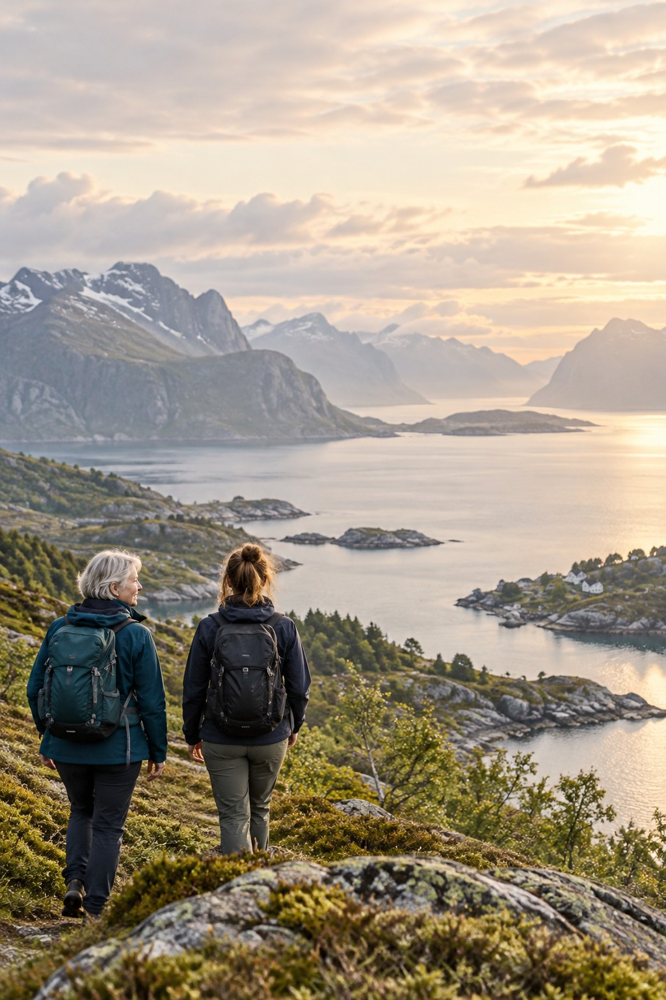
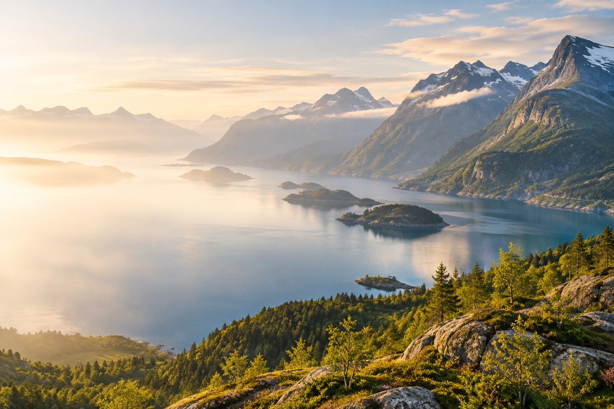

FOLK
Et Norge
i forandring
Generasjoner, flytting og livet på stedene vi kaller hjemme.
Utforsk historien
VELKOMMEN TIL NORGE I TALL
Utforsk utviklingen i samfunnet vårt gjennom tall, forklaringer og nye perspektiver.
Utforsk temaeneAI-generert illustrasjonsbilde
Historiene er foreslåtte innganger. Bildene er AI-genererte illustrasjoner, ikke dokumentasjon av bestemte steder eller personer.
Designplassholdere · tall er ikke tilkoblet
—
Hvor mange er vi?—
Hvor mange er i jobb?—
Hva skaper vi?—
Hva deler vi på?—
Hvordan går omstillingen?TALLENE BAK SAMFUNNET
Norge i tall skal gjøre åpne data lettere å forstå og enklere å etterprøve. Start med et spørsmål, utforsk utviklingen og finn kildene bak.
Utforsk BNP og KPI i pilotenET KLARERE BILDE AV NORGE
Hvordan har vi det, og hvordan er Norge i endring? Utforsk tallene som gir perspektiv på samfunnet vi deler.
Utforsk temaeneUTFORSK NORGE
Begynn med det du er nysgjerrig på. Hvert tema samler spørsmål, forklaringer og tall på ett sted.
MENNESKENE
Hvem er vi, hvor bor vi, og hvordan endrer befolkningen seg?
HVERDAGSØKONOMIEN
Hvordan utvikler arbeidslivet og økonomien i hverdagen seg?
VERDISKAPINGEN
Hva skaper vi, og hvordan utvikler økonomien seg over tid?
FELLESSKAPET
Hvor kommer pengene fra, og hva bruker fellesskapet dem på?
OMSTILLINGEN
Hvordan endrer utslipp, energi og naturen rundt oss seg?
Temasidene er foreslåtte innganger og er ikke laget ennå.
ET STED Å BEGYNNE
ØKONOMI · INNSIKTSe hvordan verdiskapingen per innbygger har utviklet seg, og sammenlign Norge med våre naboland.
Åpne BNP-pilotenOM NORGE I TALL
Åpne data, satt i sammenheng. Målet er å gjøre utviklingen i Norge lettere å utforske og enklere å etterprøve.